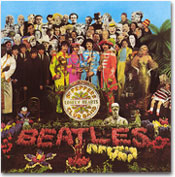

|

その昔、わたしが少しばかりの音楽の知識を持つようになった頃、それこそ世紀の一大発見でもしたかのように、嬉々として人に語ったものだ。今となっては実にたわいもないことなのだが……でも、それちょっとおもしろいよね、っていう話である。
「偉大な音楽家はみなBで始まる。」
クラシックでは、「ドイツ３大B」と呼ばれるバッハ、ベートーヴェン、ブラームスを始め、フランスのベルリオーズやビゼー、オーストリアのブルックナー、ハンガリーのバルトーク、アメリカのバーンスタイン、イギリスのブリテン等々、頭文字がBの作曲家がたくさんいる。音楽辞典を引けば、もっといろいろ出てくるだろう。イギリスのブリテン、って洒落じゃなくて、オペラ『ピーター・グライムズ』などを書いた20世紀を代表する作曲家の一人なのだ。
典型的なイギリス人のことをジョン・ブルというが、16世紀エリザベス朝の時代、その名もジョン・ブルというオルガニスト兼作曲家がいた（ブルはわたしの卒論のテーマであった！）。18世紀の政治諷刺物語の中でイギリス人の象徴として描かれたジョン・ブルは、単純で激昂型、大胆、気まぐれだという（B型だね？）。作曲家ブルの音楽は、まさにそんな作風だ。オルガン曲など、きれいというより、やたら激しく、デモーニッシュで、技巧に走った作品が多い。かたや、もっと洗練された音楽でエリザベス朝最大の作曲家と言われるのが、ウィリアム・バード（Byrd）。スペルは違うが、まったく鳥birdと牡牛bullそのものではないか。バードで思い出すのは、アメリカで1960年代に活躍した、「ミスター・タンブリンマン」のザ・バーズ(Byrds)。愛称バード(Bird)といえば、バップのパイオニア、チャーリー・パーカーで、日本には小文字のbirdさんもいる。古代より17〜18世紀まで、アイルランドやスコットランドに存在したといわれるケルト民族の吟遊詩人も、バード(bard)といった。
とてもB型らしい話の展開になってきたが、このまま突っ走ろう。そう、わたしは典型的なB型人間なのだ。
かつてわたしにBの偉大さを確信させたのは、牡牛でも鳥でもない、カブトムシ＝ザ・ビートルズであった。バッハ、ベートーヴェン、ビートルズ。これだけで音楽史上３大Bとして語るに十分だった。それからというもの、心を引かれるアーティストに出会うたび、その頭文字の多くがBであることに気づき、この法則は一体何なんだ？ と真剣に考えたりもした。ただ単にBで始まる名前が一般的に多いだけの話だ、と気づいたのは、だいぶ後になってからである。
それにしても多い。イギリスがビートルズなら、同時期のアメリカにビーチ・ボーイズ有り。ビースティ−・ボーイズにバックストリート・ボーイズ。バービー・ボーイズはカタカナだっけ？ ボブ・ディランにボブ・マーリー。ブライアン・イーノにブライアン・フェリー。ブラインド・フェイスにブラック・サバス。ボノにブラーにベックにボン・ジョヴィ。ブルースの大御所B.B.キング。バート・バカラックもボビー・ブラウンもB.B.だ。ロックンロールの元祖、ボ・ディドリーにビル・ヘイリー。コーラスが素晴らしいブラザーズ・フォー、ビー・ジーズ、ボーイズ・?・メン。ビョークもブリトニーも、みんなB。日本だって、ボウイにバクチク、ブランキー、B'zにブーム、キリがない。ひとり、山手線ゲームをやっている気分だ。世界中のアーティストの名簿を作るわけじゃないので、ほんの思いつきを挙げたまでだ。ジャンルが片寄っているのも、ご勘弁を。もちろん、B以外にたくさんすばらしいアーティストがいるし、大好きなアーティストもたくさんいる。それを承知の上で、まだまだBで突っ走る。
Bのつく音楽って気持ちいい。BGMで聞き流すもよし、じっくり聴くもよし。ブルース、ブギウギ、ブルーグラス、ビギンにボサノヴァ、しっとりバラード。バスやバリトン歌手の声に酔う。バップに浸り、バロックになごむ。ブラス・バンドは爽快で、ビッグ・バンドに体が揺れる。大好きなのはブリティッシュもの。16世紀の古楽から現代まで、トラッド、ロック、ポップ、クラシック……ブリティッシュものはなんでもOK。
Bのつく楽器もいろいろある。バグパイプ、バンジョー、アルゼンチン・タンゴに欠かせないバンドネオン、ラテン・アメリカ音楽に使われる太鼓ボンゴ、ロシアのバラライカ。
だから何なの？ である。何でもないのだ。ただ、「バッハ、ベートーヴェン、ビートルズ」以来、わたしはBにこだわっているのである。とかく、とやかく言われるB型。Aの次の２番手のB。B級グルメにB級映画。ハ調の音階ではB（シ）は導音と呼ばれ、つねに主音のC（ド）に進まなければならない宿命を負わされている。ヨナ抜き音階ではF（ファ）と共に排除される。そんなBに愛着を持つのも悪くはないだろう。偉大なBと、ちょっとだけみじめなB。いろいろあるB。そんなところが魅力なのかもしれない。
どうも最近、女性アーティストはAが優勢のようだ。今、乗りに乗っているアメリカの十代、アヴリル・ラヴィ−ン。グラミーを総ナメにしたアリシア・キーズ。ベテランのアラニス・モリセット。アムロ、あゆ、aiko……。これも、日本名に「あ」で始まる名前が多いからだけの話なのだが、そんなことにこだわりつつ、I'm gonna B in music ―― 日々、音楽を楽しんでいるのである。
|